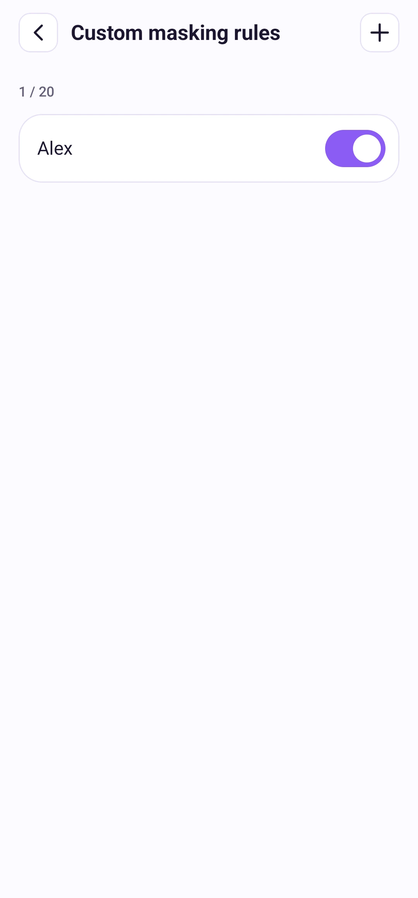

Settings
Custom masking rules
Save text you often need to hide and include it in smart detection.
Watch the steps
Choose a timestamp to jump to a step. Use fullscreen for a closer look.
How to use it
Open Settings → Custom masking rules → Add rule. Enter 2–64 characters, such as a name or address. You can save up to 20 rules, including disabled rules. Free and Pro have the same limit.
Rules match text recognized in the image; they do not support regular expressions or fuzzy matches. After editing a rule, run Smart again to apply it. Rules stay on this device and are removed if you clear app data or uninstall.

